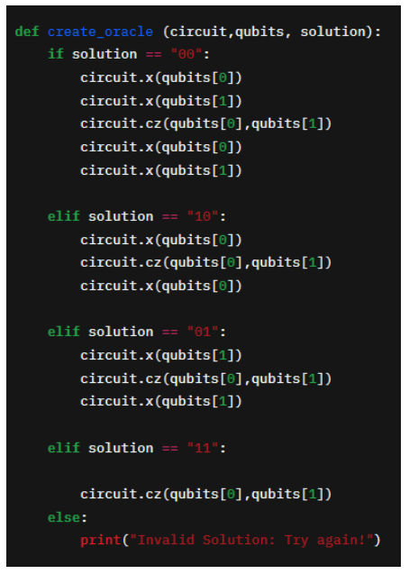
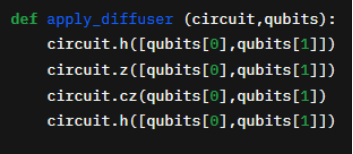
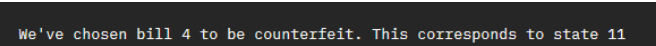
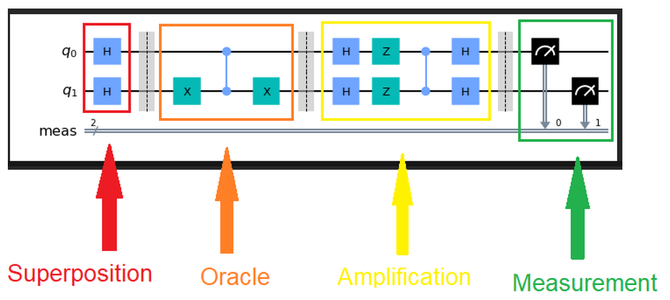

Grover Search Code¶
Please open the Grover_Demo notebook in the IBMQ Lab. The first thing we do, after loading the necessary background modules, is to define an Oracle for our bill checker. This is done in cell [2]:

Because this is just a simple demonstration, some of the complexity that exists in real oracles is removed. In this case, the function that we are checking is quite simple, so the creation of the Oracle in all four possible instances of our solution is very transparent. For more complex problems, such as a Sudoku solver, for example, the Oracle will be much more complex.
The next thing we do is add a function that will amplify the ‘marked’ solution:

These functions are pre-coded so that you don’t have to worry about them. We’re just explaining them here so that you know what is going on!
Now that we have these tools, let’s build the circuit. Go ahead and run cell [3]. At this stage, we’ve just initialized out circuit to the
\(\vert00\rangle\) state. Now you have to complete the very first step of the Grover algorithm. In the built-in composer tool, drag and drop the necessary gates to put the circuit into a superposition.
If you run cell [4], you’ll be able to see what the circuit looks like.
In cell [5], we will randomly choose one bill to be counterfeit. This information is ‘embedded’ in the function that the oracle evaluates, allowing us to find the solution. All of this is going on under the hood —don’t worry!
The bill that is chosen to be counterfeit will print to the screen, so you know what to look for in the state index. Each bill index, 1 ,2 3, or 4, is matched to one of the states \(\vert00\rangle\), \(\vert01\rangle\),\(\vert10\rangle\) or \(\vert11\rangle\).

Next , we’re going to create the full circuit. Note the separate parts of the circuit corresponding to the superposition, Oracle, and amplification states. Together, the Oracle and amplification stages form a Grover iteration. Let’s take a look at what this circuit might look like for a specific instance.

Go ahead and run cells [6] and [7]. The results of a quantum simulator of the algorithm will display the solution states that are calculated.
If the solution corresponds to an index of ‘00’, what is the probability of obtaining ‘00’ as a solution in the quantum simulator?
25%
50%
100%
Remember from the experiments we did with superdense coding: quantum simulators will model ideal behavior. Ideally, our solution will be correct 100% of the time after running the algorithm.
Now, run cells [8] and [9]. We’re submitting the circuit to be executed on a real quantum computer! Because these are real devices, there may be a queue. To minimize the wait time, try to work in groups and submit one circuit/group. Wait for the job monitor to finish.
Then, run cell [10] to plot the results. What do you observe when the circuit is run on a real quantum computer ? How is it different from the quantum simulator case? Discuss.